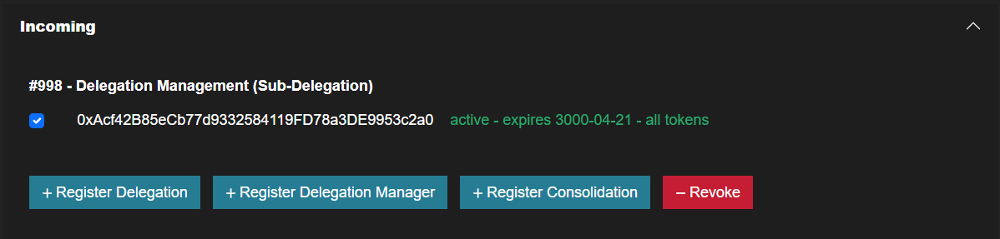
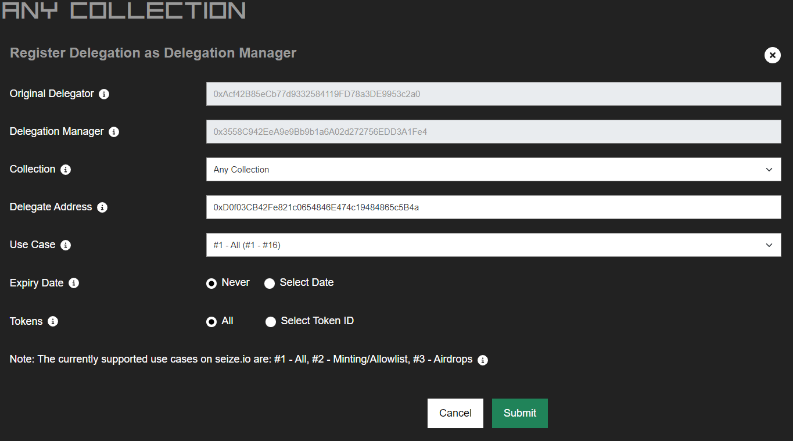

- Go to the Delegation Center Section and click the 'View/Manage' button for (e.g., 'Any Collection' for all collections or a specific collection such as 'The Memes Collection').
-
In the Delegation Managers (Sub-Delegations) area, check for incoming Sub-delegations. If any are
present, related actions will be displayed within that area.

-
To register a new delegation using Delegation Management (Sub-Delegation) rights, select the
delegator address and click the 'Register Delegation' button.

-
Complete the Register Delegation Using Delegation Management (Sub-Delegation) Rights form:
- Choose the collection for which you want to register the delegation (e.g., ‘Any Collection’ for all collections or a specific collection such as 'The Memes Collection').
- Enter the delegation address (e.g., a hot wallet address).
- Select a specific use case for the delegation (e.g., '#1 All').
- Choose an expiry date (select 'Never' if you don't want the delegation to expire).
-
Specify if the delegation pertains to all tokens owned by the
delegator or a specific token ID (e.g., 'All').

- Click the 'Submit' button and execute the transaction.